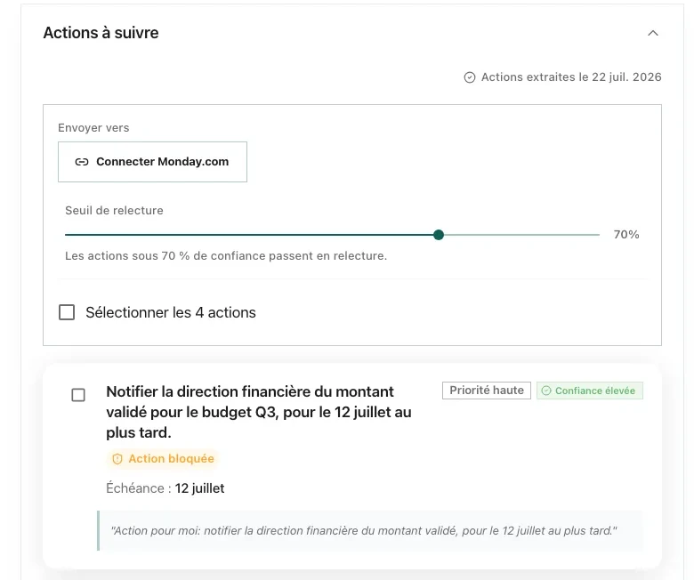
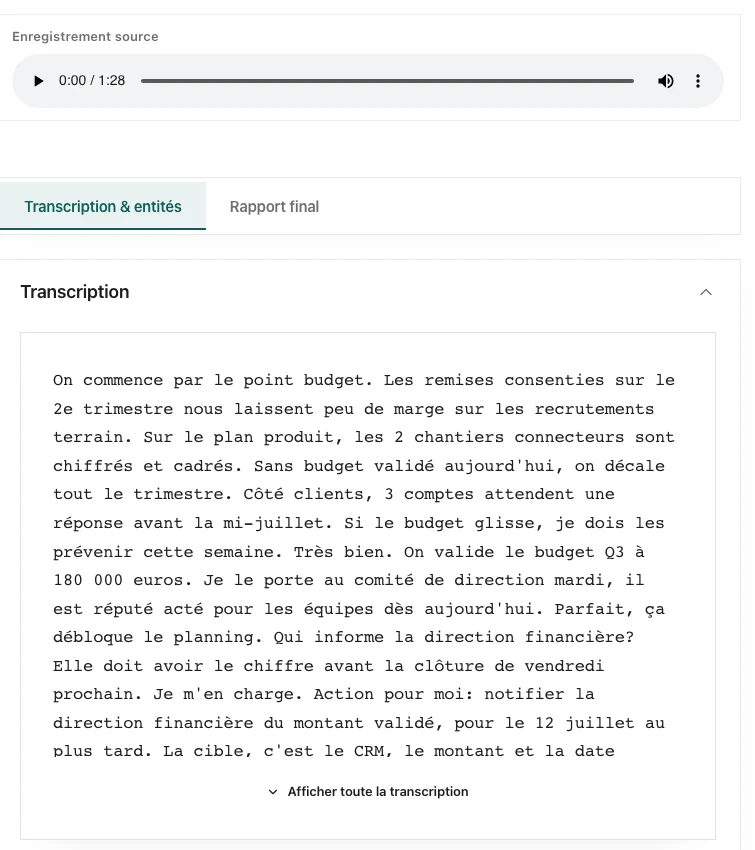
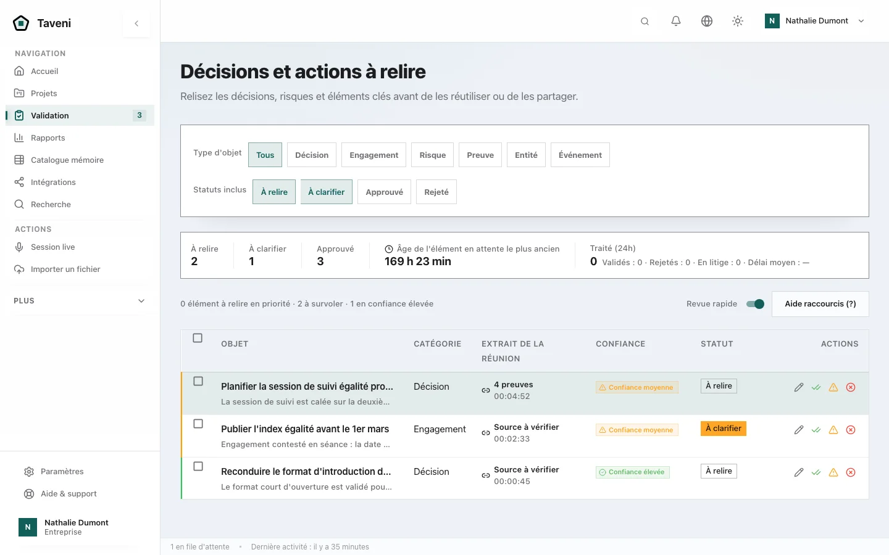
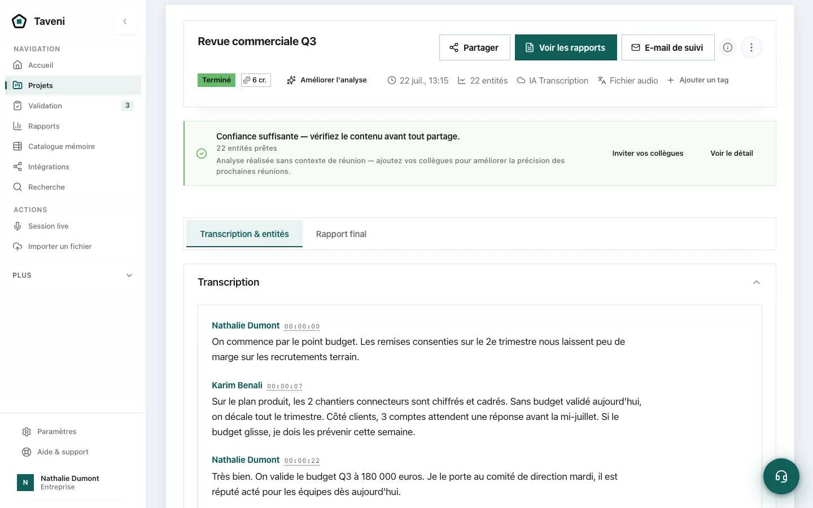
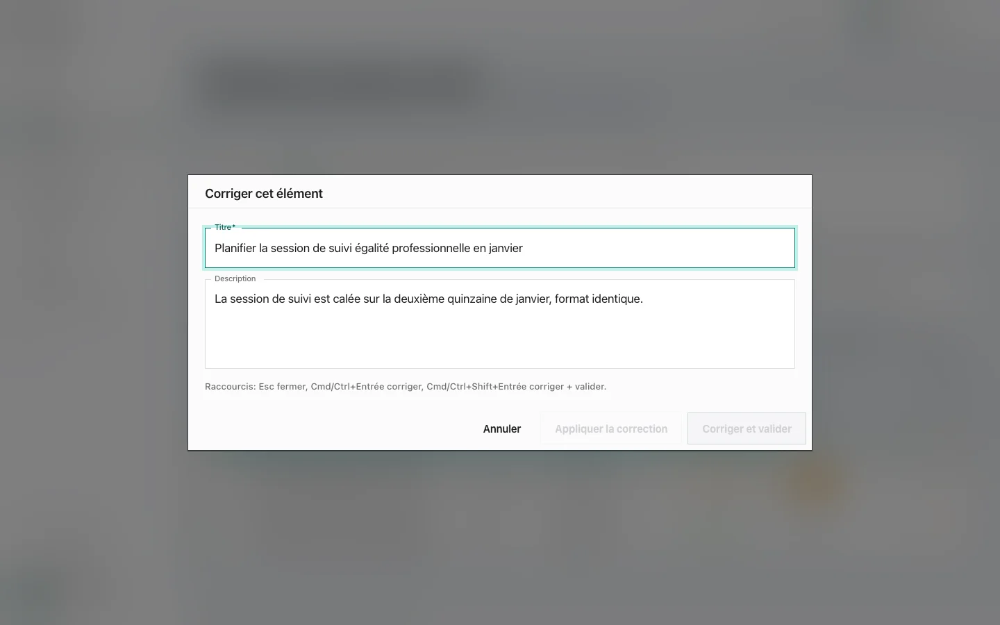
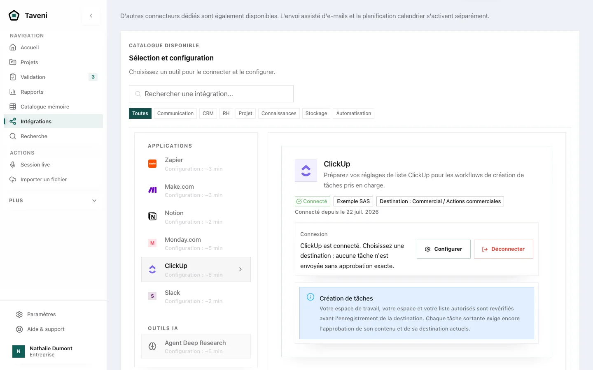
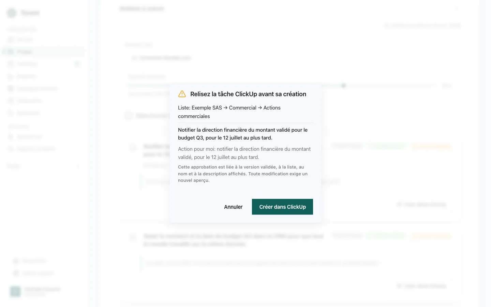
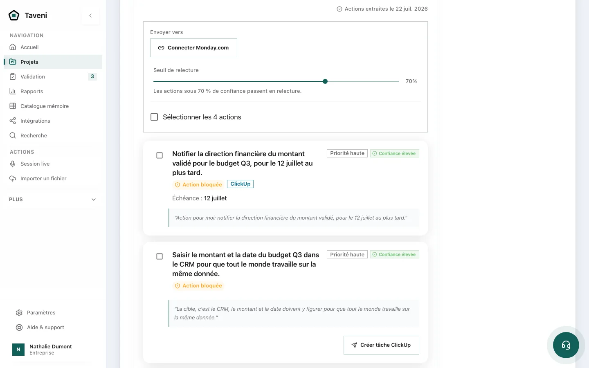

Capturer.
Captez une réunion, un appel ou une source existante sans perdre le contexte oral.
Réunion et contexte réunis
Après une réunion, l’essentiel se perd : qui a décidé quoi, pour quand, dans quel outil. Taveni en tire des propositions de décisions et d’actions, avec responsable et échéance quand la réunion les précise ; votre équipe vérifie chaque proposition avant de la partager ou de l’envoyer vers un autre outil.
Évaluation sur un processus réel · Périmètre cadré · Sans engagement
…Très bien. On valide le budget Q3 à 180 000 euros ; je le porte au comité de mardi. Action pour moi : notifier la direction financière du montant validé, pour le 12 juillet au plus tard…
Valider le budget Q3 de 180 000 € au comité de mardi.
Rien n’est envoyé avant validation par votre équipe.

Les outils de résumé produisent des comptes rendus que personne ne rouvre. La vraie valeur est ailleurs : dans les décisions que vos équipes prennent à l’oral, assument, et doivent pouvoir retrouver, relire et exécuter.
Budget, priorité, exception accordée à un client : la décision est prise à l’oral, puis se perd dans une longue transcription.
“Je m’en occupe” n’est pas assez clair pour créer une tâche fiable dans un outil projet ou support.
Le compte rendu existe, mais l’action ne rejoint ni le CRM, ni le support, ni l’outil de projet — et personne ne contrôle qui peut voir quoi.
Taveni est conçu pour transformer la matière d’une réunion en mémoire opérationnelle sourcée : des décisions et actions à relire avant tout handoff. L’évaluation vérifie ce qui est réellement conservé, utile et réutilisable dans votre workflow.
Choisissez une réunion opérationnelle récurrente et l’endroit où ses suites sont traitées : c’est sur ce processus concret que vous jugez si Taveni vous aide.
Taveni prépare des propositions ; votre équipe les relit et les approuve avant tout envoi. Le chemin vers chaque outil métier est vérifié pendant l’évaluation.
Captez une réunion, un appel ou une source existante sans perdre le contexte oral.
Réunion et contexte réunis
Ajoutez rôles, projets, vocabulaire, règles d’accès, preuve et destination attendue.
Propositions à relire
Confirmez les décisions et actions importantes ou gardez les éléments incomplets en attente.
Contenu approuvé par votre équipe
Après approbation, utilisez le connecteur vérifié dans le périmètre ou un export manuel documenté.
Envoi contrôlé
Capture réelle de Taveni
Des actions qualifiées, en attente de votre relecture.







La note automatique raconte ce qui a été dit. Taveni vise à structurer ce qui mérite une revue opérationnelle : source, responsable, statut, règle d’accès et destination proposée. L’évaluation vérifie ce comportement sur un workflow borné.
Plus l’IA devient bon marché, plus on risque de lui renvoyer du contexte sans le trier. Taveni est conçu pour séparer le verbatim de l’information qualifiée. La quantité de contexte évitée et son effet sur le coût doivent être mesurés pendant l’évaluation, pas promis à l’avance.
Quand une ressource devient moins chère, son usage peut augmenter. Pour l’IA, cela justifie de mesurer les appels et le contexte traités ; l’évaluation Taveni compare la baseline et le périmètre observé sans supposer le résultat.
Le coût dépend du modèle, du volume et du workflow. L’évaluation compare une baseline au contexte effectivement traité, sans promettre une économie avant mesure.
Quand un flux de contexte A2A/MCP est inclus et vérifié, profil de réunion, vocabulaire métier et contexte d’organisation sont qualifiés avant extraction. Les règles de source, responsable, accès et destination sont testées dans le périmètre ; elles ne prouvent pas une disponibilité générale.
{
"meeting_title": "Revue commerciale Q3",
"participants": [
{ "name": "Nathalie Dupont",
"role": "CFO" },
{ "name": "Karim Benali",
"role": "Sales Lead" }
],
"user_profile": {
"company": "Hyle Labs",
"job_title": "Direction financière"
},
"vocabulary": [
"ARR", "renouvellement", "comité Q3"
],
"org_projects": ["Expansion Q3"],
"org_clients": ["Acme Corp"],
"org_products": ["Taveni"],
"output_instruction": "Prioriser décisions, actions et preuves.",
"routing_rules": "Ne pas envoyer sans responsable, source ni droit"
}Une proposition de l’IA n’a de valeur opérationnelle qu’une fois relue par un humain. L’évaluation documente comment décisions, corrections et règles sont stockées, protégées et réutilisées ; aucune portabilité ou protection absolue n’est présumée.
Si le modèle change, l’évaluation vérifie quelles décisions, corrections et règles restent exportables et réutilisables dans le périmètre convenu.
Nous construisons des produits pour les équipes dont les décisions et les actions circulent entre échanges, outils et assistants. Taveni est conçu pour structurer les arbitrages oraux en décisions, preuves et actions à relire dans un périmètre vérifié.
« J’ai créé Taveni parce que des décisions utiles restaient enfouies dans les comptes rendus. L’objectif est de les rendre plus faciles à retrouver et à relire, sans jamais retirer la décision aux personnes. »
Adryan Perez — fondateur, Hyle Labs · Lyon
Pas nécessairement. L’évaluation part de votre outillage actuel et définit un premier handoff. Selon la disponibilité vérifiée, ce handoff utilise un connecteur inclus dans le périmètre ou un export manuel documenté.
Le traitement dépend du périmètre retenu. Avant une évaluation, nous documentons les données concernées, les services sollicités, les accès, la conservation et les contraintes de déploiement.
L’évaluation documente ce qui est conservé, exportable et réutilisable si le modèle change. La portabilité dépend du périmètre produit, des formats et des conditions contractuelles vérifiés.
Taveni est en phase d’évaluation cadrée. Le périmètre, les critères de réussite, les moyens requis et les conditions commerciales sont précisés avant tout démarrage.
Les évaluations ciblent un handoff vers un CRM, un outil de support ou de gestion de projet. La disponibilité du connecteur demandé est vérifiée au cadrage ; un export manuel peut servir de solution de repli.
Envoyez-nous votre contexte : type de réunion, outil cible, contraintes RGPD et critères de réussite. Nous vous répondrons avec une proposition de périmètre, des critères de mesure et les conditions nécessaires à l’évaluation.
contact@hyle-labs.netCe que mesure une évaluation